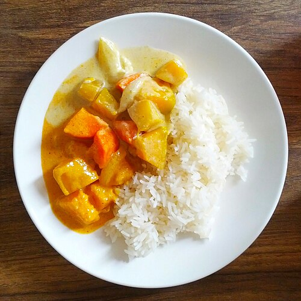

Home
Yellow Curry

Description
Fragrant, warm and spicy yellow curry. This is
a vegan recipe for the dish, which can
altered if meat is preferred.
One of the most complete dishes a vegan can eat,
full of healthy fats, protein, carbohydrates and
most importantly taste!
Ingredients:
- Yellow Curry Paste
- Coconut Milk
- Firm Tofu
- Red or Yellow Lentils, as preferred
- Onions, Garlic, Bell Pepper(, Pak Choi)
- Side: White Rice, either Jasmin or Basmati
Steps:
- Cut vegetables
- Pre-cook rice
- Pre-cook lentils
- Take only the fatty part of the coconut milk
and heat it up until the fat is broken,
meaning until the translucent fat from the
coconut milk gets seperated
- Add a good amount of curry paste (1/2 table spoons)
- Add in the vegetables and fry until they catch some color
- Add the tofu and fry
- Add the pre-cooked lentils and the liquid from the coconut milk
- Let simmer until tastes combine
- Serve over white rice